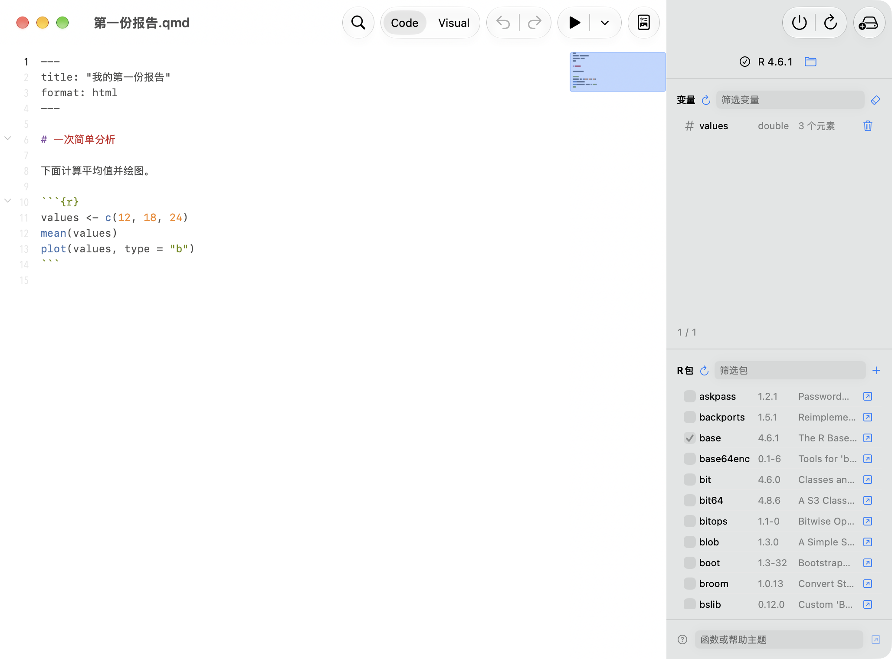

界面导览
文稿窗口由左侧编辑区和右侧检查器组成。工具栏操作当前文稿；检查器内容属于这个窗口的 R 会话。
Code：精确编辑原文

顶部文件名菜单提供保存入口；“文件”菜单包含另存为和文稿同步。Code / Visual 切换编辑方式；其后是撤销/重做、运行全部与运行范围菜单、Quarto 渲染按钮。Code 中行号帮助定位，围栏和章节旁的折叠箭头收起显示内容，minimap 用于长文稿导航。折叠不删除源码。
Visual：在正文中写作

Visual 将常用 Markdown 显示为排版内容。编辑工具栏及“格式”“插入”菜单提供标题、强调、列表、链接、图片、公式和表格等操作。块旁可运行或格式化 R 代码，复制按钮复制代码内容；正文附近显示交互结果。右侧窄导航按标题跳转。
Code 与 Visual 使用同一份原文，切换不生成第二份文稿。复杂 YAML、Quarto 参数或原始标记适合在 Code 中编辑。
右侧检查器
| 区域 | 如何使用 |
|---|---|
| 顶部 R 工具 | 电源启动/停止会话；重启清除变量并重新开始；RData 单独保存工作区 |
| R 状态与版本 | 显示版本与忙碌/就绪状态；悬停查看最终运行摘要 |
| 变量 | 刷新、按名称/类型/摘要筛选、清空；点击对象打开只读预览 |
| 变量分页 | “载入更多”每次取下一批，筛选覆盖整个会话元信息 |
| R 包 | 查看包、刷新、筛选和安装；包详情有说明及官方入口 |
| 帮助 | 输入函数或主题，打开 R 官方搜索结果 |
运行全部时，R 状态旁的扇形显示按已处理块数计算的进度，不代表剩余秒数；本轮结果在整轮结束时一起显示。手动运行单块继续即时显示输出。
渲染面板

先选格式和保存位置，再选 YAML 或自定义参数。自定义分为文档、样式、代码与图形、更多参数，按格式显示适用项目。底部日志查看实际执行与错误；取消用于中止任务。详见R 运行与报告导出。
帮助与设置窗口
详细帮助左侧目录可展开小节，右侧阅读图文；顶部可搜索、前进后退、回首页和收起目录。两个简明帮助窗口分别用于快速操作和常用语法速查。
设置顶部依次为通用、文档、字体、高亮、补全、格式化、环境，所有选项直接在对应页面调整。拖动文稿分隔栏可改变检查器宽度。多个文稿分别开窗，可从“窗口”菜单切换。